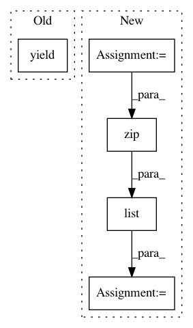

1b305c86dc2ff6b3461c42f4428460b66a8bff8b,calamari_ocr/ocr/backends/tensorflow_backend/tensorflow_model.py,TensorflowModel,predict_dataset,#TensorflowModel#Any#,350
Before Change
enc_param = json.loads(enc_param.decode("utf-8") if isinstance(enc_param, bytes) else enc_param)
decoded = self.ctc_decoder.decode(softmax[:output_seq_len[0]])
// return prediction result
yield NetworkPredictionResult(softmax=softmax,
output_length=output_seq_len,
decoded=decoded,
params=enc_param,
ground_truth=None,
)
def output_to_input_position(self, x):
return x * self.scale_factor
After Change
def predict_dataset(self, dataset) -> Generator[NetworkPredictionResult, None, None]:
dataset_gen = self.create_dataset_inputs(dataset, self.batch_size, self.network_proto.features, self.network_proto.backend.shuffle_buffer_size,
mode="test")
out = sum([list(zip(self.predict_raw_batch(d[0]["input_data"], d[0]["input_sequence_length"]), d[0]["input_data_params"])) for d in dataset_gen], [])
for pred, params in out:
enc_param = params[0].numpy()
pred.params = json.loads(enc_param.decode("utf-8") if isinstance(enc_param, bytes) else enc_param)
yield pred
In pattern: SUPERPATTERN
Frequency: 3
Non-data size: 5
Instances
Project Name: Calamari-OCR/calamari
Commit Name: 1b305c86dc2ff6b3461c42f4428460b66a8bff8b
Time: 2020-01-31
Author: wick.chr.info@gmail.com
File Name: calamari_ocr/ocr/backends/tensorflow_backend/tensorflow_model.py
Class Name: TensorflowModel
Method Name: predict_dataset
Project Name: uber/petastorm
Commit Name: 7459ce340e207f1764cf8bd94afe15bed6196fa8
Time: 2019-08-27
Author: yevgeni@uber.com
File Name: petastorm/pytorch.py
Class Name: DataLoader
Method Name: __iter__
Project Name: Pinafore/qb
Commit Name: e1e9d315a8615a88f37e1443fdb277a46475fd50
Time: 2017-03-21
Author: ski.rodriguez@gmail.com
File Name: qanta/extractors/classifier.py
Class Name: Classifier
Method Name: score_guesses